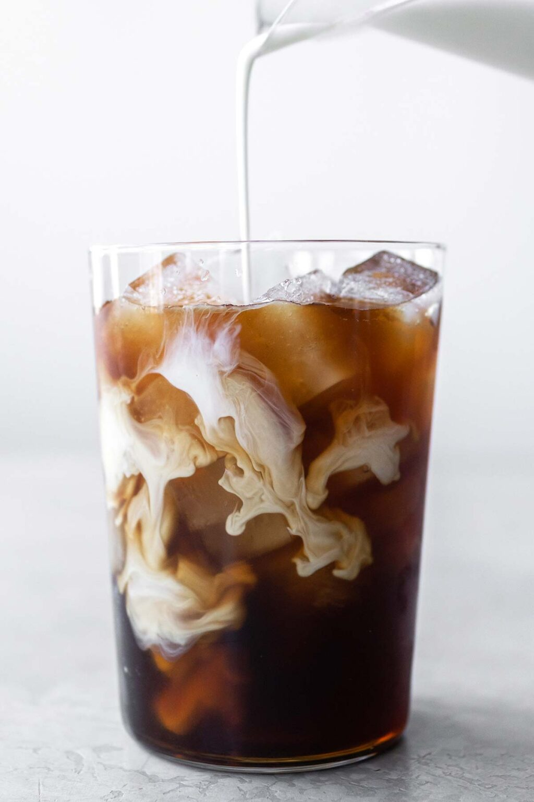

Ice Coffee

Description
Make a perfectly sweet and delicious iced coffee at hpme with easy step by step instructions.
prep time is 3 min, total time is 3 min, course is drinks and it yields 1 serving
Ingredients
- 1 cup Ice
- 1 cup of strong coffee
- 2 tablespoons simple syrup
- 2 tablespoons half & half
Instructions
- pour strong, cooled coffee over ice.Use cooled down or cold coffee. A good balance is half strong coffee and half ice.
- stir in simple syrup.Add more or less, depending on how sweet you like your iced coffee.
- add half & halfAdd more or less, depending on how creamy you like your iced coffee.
source:
ice coffee